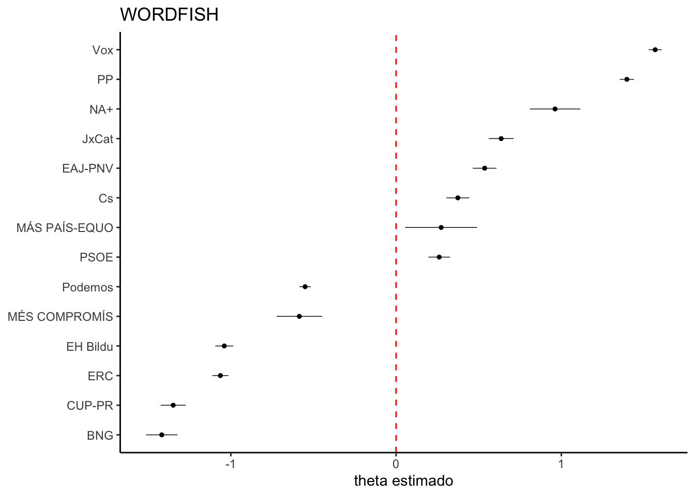
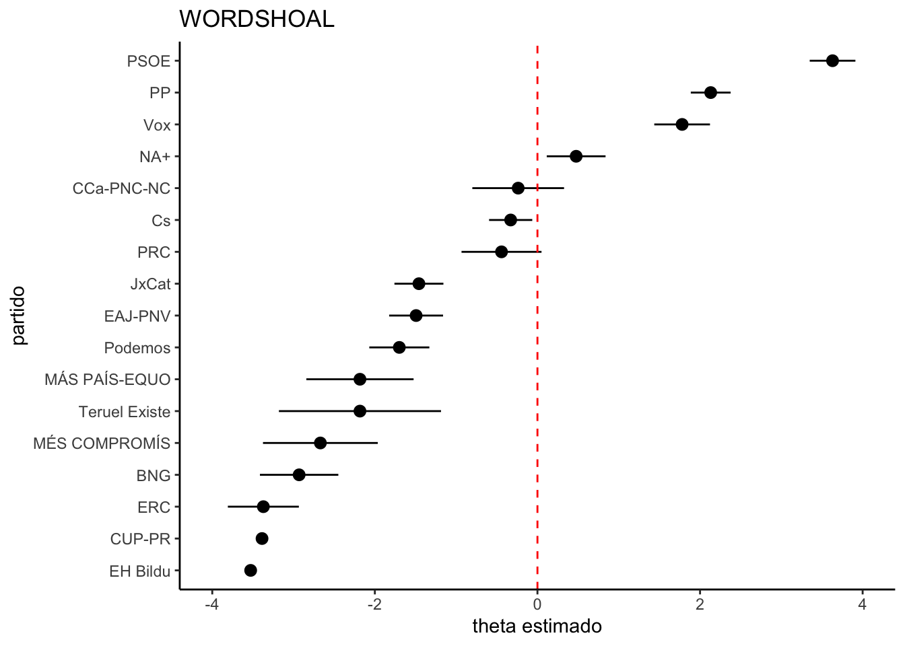

Codificación temática y escalonado
Clasificación empleando diccionarios y escalonado
Introducción
Esta sección se divide en dos partes. La primera trata de cómo codificar temáticamente una cantidad de textos y sacar el máximo provecho de técnicas de análisis textual para encontrar patrones. La segunda trata de emplear técnicas de escalonado de textos para posicionar partidos políticos.
Codificación temática
Keyword in Context (Kwic)
Una forma sencilla de contextualizar términos consiste en visualizarlos directamente en los pasajes del texto en que aparecen. El método kwic (keyword in context) extrae de un texto o corpus todos los trechos en los que aparece una palabra y los muestra dentro de un contexto o ventana que puede ser compuesta por una o más expresiones antecedentes y posteriores. En el ejemplo abajo, buscamos la palabra “libertad” en los discursos de investidura de los presidentes españoles, con una ventana de 5 palabras alrededor del término.
Code
# Carga el paquete tenet
library(tenet)
# Crea un corpus (discursos inaugurales Espana)
cp <- corpus(spa.inaugural)
# Crea un data.frame a partir de
# la funcion Keyword in Context de
# Quanteda
d <- kwic(x = tokens(cp),
pattern= "libertad",
window = 5)
# Visualiza los resultados
reactable::reactable(d,
resizable = T,
wrap = F)Como podemos observar, el uso del término libertad varía significativamente según el momento y el presidente en cuestión. Adolfo Suárez lo utiliza en un contexto de transición hacia la democracia, como superación de una etapa anterior autoritaria. Por esa razón, la palabra aparece junto a derechos, instituciones y democracia. Felipe González la utiliza junto a las ideas de igualdad y solidaridad, mientras que Aznar las asocia a la expresión, enseñanza y seguridad. Zapatero introduce el concepto de libertad sexual. Rajoy la asocia a prosperidad e igualdad, mientras que Pedro Sánchez se centra en dos ejes: valores postmateriales (sexual, aborto, eutanasia) y territorial (autonomía de las comunidades autónomas).
Por otra parte, si hacemos un ejercicio y utilizamos el término “empleo”, se puede averiguar que este se refiere casi exclusivamente al mundo laboral y políticas activas de acceso o creación de puestos de trabajo. Solo en dos ocasiones específicas se trata del verbo “emplear” con el significado “utilizar”, como las referencias “emplear una política monetaria” o el “empleo de los caudales públicos”, ambas en el primer discurso de investidura de Felipe González. Por lo tanto, al examinar los resultados, vemos que esos dos casos constituyen una excepción al significado principal de empleo a que hacen referencia todos los discursos.
Árbol de palabras
El árbol de palabras (wordtree) nos brinda una visión semejante al kwic con una diferencia fundamental: cada palabra que compone la frase se dimensiona de acuerdo con la frecuencia con que aparecen en los textos. Este recurso resulta útil para discriminar los usos más comunes de los términos en sus contextos predominantes. De acuerdo con Wattenberg y Viégas (2008, 2–3), corresponde a una alternativa gráfica y exploratoria de visualización de los kwic. Se trata, además, de un recurso interactivo que permite al usuario jugar con los contextos, direccionando su mirada hacia frases concretas o subiendo a patrones más generales. Posee tres características distintivas. Primero, facilita la identificación de repeticiones de palabras. Segundo, tiene una estructura de árbol claramente identificable. Finalmente, facilita la exploración del contexto.
Por lo tanto, representa una herramienta que sirve tanto para la exploración de patrones en los textos durante una primera fase exploratoria de un estudio como de instrumento de comunicación de patrones o temas recurrentes encontrados en los datos. Su interactividad invita tanto a la descubierta como a una mayor atención a los argumentos que se desean transmitir.
El código abajo utiliza la función wordtree del paquete tenet para crear el árbol de palabras alrededor del término libertad. Como podemos ver, el resultado es muy semejante al producido por el kwic. No obstante, ahora nuestra atención se ve atraída por las palabras de mayor tamaño. Las rutas más comunes se evidencian, como es el caso de “de la libertad de expresión”, por ejemplo.
Code
# Crea un arbol de palabras en tenet
wordtree(corpus = cp,
keyword = "libertad",
height = 800)Por otra parte, si filtramos el corpus para que incluya solamente textos de un presidente o partido político, podemos identificar los usos específicos que hacen de los términos y, así, trazar variantes y revelar patrones útiles teóricamente. Seguramente veremos diferencias sustantivas entre Adolfo Suárez y Pedro Sánchez, como hemos podido contrastar en el apartado anterior. Además, será posible identificar de forma más sencilla las expresiones más recurrentes o típicas de cada uno. En el caso de José María Aznar, por ejemplo, la libertad se asocia de forma muy evidente al progreso económico.
Codificación con diccionarios
En esta parte del trabajo revisaremos los instrumentos y estrategias disponibles para el desarrollo de temas. Examinaremos diferentes herramientas para determinar el contexto en el que se inscriben, así como determinaremos la prevalencia de distintas categorías analíticas. Haremos especial hincapié en el concepto de diccionario o léxico como el resultado de un proceso de codificación temática y construcción teórica a partir del análisis abductivo resultante de la consulta e iteración constante entre texto (como material empírico fundamental), teoría e interpretación.
Los diccionarios pueden considerarse como dispositivos de ensamblaje de expresiones de interés teórico o como instrumentos de organización de ideas. Permiten la aglutinación de términos en categorías analíticas más amplias y su posterior organización en estructuras conceptuales jerárquicas. La creación de un diccionario representa una técnica de medición y búsqueda en la el uso de palabras y otros elementos textuales permiten identificar la presencia de ciertas ideas o conceptos en un corpus determinado. También se le podría considerar como un libro de códigos, una compilación de categorías y los elementos que le componen. La formalización explícita de los grupos y su documentación facilita el trabajo en grupo y aumenta la transparencia y reproducibilidad de al menos parte del análisis realizado.
El ejemplo abajo crea un diccionario que clasifica 39 términos según los códigos “economía”, “fiscal”, “educación”, “sanidad” y “medioambiente”. Luego, lo emplea en conjunción con la función tagText para resaltar las categorías en el discurso de investidura de Adolfo Suárez. Al analizar los resultados, vemos que a cada categoría (o código) corresponde un color cuyo nombre se revela al mover el cursos sobre una palabra subrayada.
Code
# Crea un diccionario de algunos términos políticos
dic <- dictionary(
list(
economica=c("econom",
"inversion",
"empresa",
"desarroll",
"monetari",
"industri",
"agric",
"agrari"),
fiscal=c("hacienda",
"gasto",
"impuest",
"presupuest",
"tribut",
"tasa",
"fiscal"),
educacion=c("educa",
"profesor",
"docent",
"escuel",
"colegio",
"universi",
"formación"),
sanidad=c("sanidad",
"salud",
"hospital",
"sanitari",
"médic",
"enfermer",
"salud"),
medioambiente=c("sostenible",
"cambio clima",
"medioambient",
"reciclaje",
"ecológico",
"límpia",
"invernadero",
"emisiones",
"carbono",
"plástico",
"fósiles")))
# genera un texto para ser leído en el panel
# Viewer de RStudio
tagText(spa.inaugural$text[1],
keywords = dic,
palette = pal$cat.cartocolor.prism.11,
font.size = 18,
title = "Adolfo Suarez (1979)",
margin = 100)El resultado nos sitúa en un espacio entre una búsqueda automatizada de términos y la codificación manual. Al aplicar el diccionario a un texto específico, se puede observar no solo dónde las categorías aparecen más o menos, sino también cómo estas se asocian entre ellas en un mismo párrafo, por ejemplo. Algunos pasajes son monotemáticos, inciden sobre una idea clave. Otros interesan por la asociación entre conceptos distintos. En muchas ocasiones es justamente la asociación entre temas lo que permite el surgimiento de nuevas hipótesis. Además, el análisis de la incidencia de los códigos en el texto invita a la revisión del diccionario para incorporar nuevos términos o categorías y, de ese modo, completar el análisis.
Miles et al. (2019, 86) sugieren que un método para utilizar diccionarios como herramientas para la codificación consiste en crear una lista provisional de códigos por medio de un proceso deductivo a partir de las referencias teóricas que sirven de marco para el estudio. Una vez elaborada, puede servir de semilla para el examen de los textos y pasar por procesos sucesivos de adaptación, refinamiento y elaboración con el empleo de una codificación inductiva complementaria.
Este proceso de revisión constante requiere instrumentos que permitan explorar, ordenar, filtrar y sintetizar la información. La función tagCorpus de tenet emplea una tabla interactiva que permite a los usuarios llevar a cabo una serie de tareas de exploración de los términos y códigos de un diccionario en todo un corpus. Por lo tanto, se centra en posibilitar la identificación tanto de aspectos compartidos como de señas distintivas entre documentos, categorías o actores. Además, permite examinar de forma sumaria la coocurrencia de códigos en frases o párrafos.
El paquete tenet también incluye un diccionario de ejemplo llamado dic.pol.es. Se trata de un conjunto de códigos que analizan diferentes dimensiones de los discursos políticos. Contiene tres niveles: (1) palabras o expresiones, (2) códigos de primer nivel y (3) códigos de segundo nivel. Por ejemplo, “izquierda unida” pertenece al código nivel-1 “partidos” y al código nivel-2 “actores”. Por su parte, “ilustres” pertence a “retórica” (nivel-1) y a “discurso” (nivel-2).
El código abajo utiliza la función tagCorpus y el diccionario dic.pol.es para identificar la incidencia de las categorías en cada sentencia del corpus de los discursos de investidura españoles. Como se podrá ver, abajo, el resultado es una tabla con siete columnas. La primera Order corresponde al orden de la frase en el documento X (columna Doc.). De ese modo, Order igual a 1 y Doc. igual a Suárez corresponde a la primera frase del discurso de investidura de Adolfo Suárez. Paragraph corresponde a la unidad textural, que puede ser el documento completo (documents), párrafos (paragraphs) o oraciones (sentences). Las categorías más frecuentes aparecen en la columna siguiente (Main Category) y todas las categorías encontradas en la columna Paragraph aparecen en All Categories, incluídas, por supuestos, las más frecuentes. Matches informa el número de veces una palabra o término del diccionario se ha encontrado en el texto. Finalmente, Cat. No. informa el número total de categorías encontradas.
Adicionalmente, debajo del nombre de cada columna, se pueden encontrar campos de filtro. Basta digitar cualquier valor o texto para seleccionar los resultados. Por ejemplo, si uno desea saber cómo Calvo Sotelo trataba temas sociales, puede seleccionar solo los documentos que se inicien por “Calvo” y que, en All Categories, incluya el código “social”. Al hacer clic sobre el nombre de cada columna también se pueden ordenar los valores de forma ascendente o descendente.
Code
# tagCorpus, hace algo parecido para un corpus
tagCorpus(cp,
defaultPageSize = 4,
dic.pol.es,
palette = pal$cat.ggthemes.tableau.20,
reshape.to = "sentences",
show.details = T)Consideremos otro ejemplo. Si queremos identificar cuáles actores sociales y políticos mencionados en los discursos de investidura de los presidentes españoles que estén vinculados al tema tecnológico, podemos filtrar las sentencias del corpus en las que el tema principal (Main Category) son los “actores” y en que también aparezcan (All Categories) “tecnologia”.
Vemos que la concepción tecnológica de los presidentes pasa por una actuación clave de empresas y del mercado. Poco se menciona sobre el rol de la inversión en ciencia. Mucho inversor y poco investigador. La innovación, por lo tanto, se da por la atracción de capital y de tecnologías desarrolladas por otros más que por un proceso autónomo de construcción tecnológica a partir de la inversión en ciencia. No resulta para nada casual que casi la mitad del presupesto asignado a investigación suela estar constituida por créditos destinados al I+D+I de empresas (en colaboración con la universidad).
Análisis temático
¿Cuáles códigos tienen más peso? ¿Qué categorías se asocian de forma más estrecha? Una vez creados los códigos y los diccionarios, cabe dar un paso adelante y buscar patrones, identificar las características de los conjuntos de términos y sus relaciones con otros atributos en los textos.
El análisis de la incidencia de los códigos en un corpus y su interrelación permiten explicitar patrones y definir el peso relativo de cada idea en los textos. Este apartado emplea tres estrategias para explorar la importancia de los temas. La primera consiste en averiguar el peso de las categorías, es decir, emplear estadísticas sumarias, como la frecuencia relativa de códigos o expresiones, para establecer su prevalencia. La segunda se basa en la desagregación y el filtro para comparar grupos o atributos o para seleccionar aspectos concretos que se desean examinar con más detenimiento. La tercera investiga su asociación por medio de las redes de coocurrencia.
Combinadas, tales estrategias permiten identificar los temas centrales presentes en un texto o corpus y cómo se relacionan entre sí. También revelan su variación de acuerdo con variables contextuales, como puede ser un partido, el presidente o un período de tiempo determinado. Se tratan de herramientas sencillas, pero muy útiles, a la hora de contextualizar ideas e identificar variaciones importantes en el uso de conceptos o términos.
Estadísticas temáticas
Denominamos estadísticas temáticas el conjunto de técnicas cuantitativas que permiten representar la importancia de categorías o expresiones en un corpus. ¿Cuántas veces los presidentes de gobierno han mencionado la ciencia en sus discursos de investidura? ¿Cuántas han mencionado al terrorismo? ¿Quiénes han sido los que más uso han hecho de la expresión “género” o “fuerzas de seguridad”?
Por lo tanto, aunque sencillas, tales herramientas permiten delinear diferencias programáticas e ideológicas entre distintos actores políticos. Sobre todo, señala aquellas categorías más frecuentes, tanto por el número de veces que aparecen como por la cantidad de documentos en los que aparecen. Por ejemplo, solo algunos de los presidentes mencionan el tema de género en sus discursos (en especial José Luis Rodríguez Zapatero y Pedro Sánchez). No obstante, temas como el mercado laboral o la fiscalidad del Estado, como esperado, aparecen en todos ellos (aunque acompañados de distintos calificativos).
El panel abajo contiene un conjunto de recursos para el análisis de los códigos del diccionario dic.pol.es aplicado a los discursos de investidura de los presidentes de gobierno de España. La primera pestaña (tabla) contiene la frecuencia relativa de los códigos y términos del diccionario en el corpus. Las demás corresponden a visualizaciones que permiten hacer una síntesis de los pesos relativos de palabras-clave y categorías en los textos. Force Directed Tree genera un diagrama de árbol que representa la jerarquía de los términos como una red. Las dos alternativas siguientes (voronoi tree) generan una imagen parecida, pero con otros instrumentos de interacción y niveles de zoom. Esto permite mirar hacia los resultados de una forma ligeramente distinta.
La función countKeywords de tenet produce un data.frame con un conjunto de campos que auxilian en el análisis del peso relativo de cada categoría en un corpus determinado. El primero es groups, que indica el grupo (como partido o presidente, por ejemplo) que detalla los resultados. Si no se ha informado ninguna variable de grupo, aparecerá “All” (todos). El segundo, level1, señala el código de más alto nivel en un diccionario (la función admite hasta dos niveles de jerarquía, en esos casos aparecería también level2). El tercero, keyword, indica la palabra-clave que conforma el diccionario y frequency muestra la frecuencia (absoluta o relativa del término en el corpus).
La tabla abajo muestra la frecuencia relativa (por cada mil palabras) de cada término del diccionario dic.pol.es en el corpus de discursos de investidura de los presidentes españoles.
Código
# Calcula la frecuencia relativa en que cada
# palabra ha sido encontrada para cada nivel
# del diccionario
xy <- countKeywords(cp,
dic.pol.es,
rel.freq = T,
quietly = TRUE)
# Elimina los términos no encontrados
xy <- xy[xy$frequency>0,]
# Puesto que es una frecuencia relativa
# multiplicamos por 10 mil para tener la
# ratio de ocurrencia a cada 10 mil palabras
xy$frequency <- round(xy$frequency*10000, 1)
# Visualiza los resultados
reactable::reactable(xy,
resizable = T)Si ordenamos por frecuencia, vemos que la categoría más general de discurso y, dentro de esta, España, se destaca. A ella le sigue la figura retórica de “Señor”, que incluye todas las formas derivadas: señor, señora, señoría, señores, y demás. Se trata también de una forma de tratamiento común en este tipo de texto en los que los candidatos a presidente de gobierno se refieren de forma respetuosa a los demás representantes parlamentarios.
Aunque la tabla nos brinde los detalles de la frecuencia de cada término, una visualización de todos los códigos a la vez posibilita entender su peso relativo de forma instantánea y comparada. Un diagrama de árbol (force directed tree) representa cada categoría en el diccionario como un árbol en el que cada código es una rama y cada elemento una hoja que se atraen o repulsan de acuerdo con su peso relativo (Holten 2006). El tamaño de cada círculo (rama o hoja) se define de acuerdo con su frecuencia y el color según el nivel más alto en el diccionario. A mayor peso, más centralidad en el gráfico. De acuerdo con el ejemplo que se emplea aquí, discurso tendrá un color, social otro, exterior el suyo y así sucesivamente. Cada una de esas categorías abarcadoras mantendrá la misma estructura de códigos secundarios y expresiones (o keywords) como figuran en el diccionario.
Código
# Genera el gráfico de árbol
forceDirectedTree(xy,
attraction = -8,
value_col="frequency",
palette = pal$cat.wesanderson.Darjeeling1.5,
max.radius = 40,
height = 500)Como se puede ver, la categoría discurso es la que más peso tiene en el corpus. Está conformada por expresiones de tratamiento como “señorías” o “investidura” y relacionadas a España, como “españoles”, “patria” o “pueblo”. Viene seguida de temas sociales, de política exterior y fiscales.
Un treemap corresponde a otra forma de visualización de datos jerárquicos. En este caso, todas las categorías y sus subcategorías se dividen en un círculo fragmentado en partes que se dimensionan según la frecuencia de cada código (Balzer and Deussen 2005).
Código
# Agrega las frecuencias según los dos niveles
# de código contenidos en el diccionario
xx <- aggregate(list(frequency=xy$frequency),
by=list(level1=xy$level1,
level2=xy$level2),
sum, na.rm=TRUE)
# Genera el gráfico
plotVoronoiTree(data = xx,
value_col = "frequency")Al hacer clic sobre una categoría, el gráfico hace un zoom y redistribuye el espacio solo con las subcategorías del código principal seleccionado.
El ejemplo abajo repite el gráfico anterior, pero ahora con las palabras-clave como unidades de división de las áreas del círculo. Aquí se pueden observar el peso relativo de cada expresión en la configuración de cada código.
Código
# Agrega las frecuencias según el primer
# nivel de código y las palabras clave
# contenidas en el diccionario
xx <- aggregate(list(frequency=xy$frequency),
by=list(level1=xy$level1,
keyword=xy$keyword),
sum, na.rm=TRUE)
# Genera el gráfico
plotVoronoiTree(data = xx,
value_col = "frequency")Un análisis rápido de los resultados subraya la importancia de formas retóricas y puramente discursivas en el corpus. El uso de expresiones de tratamiento, como señorías, o relativos a España o los españoles predomina por su reiterada aparición. El tamaño de la categoría “discurso” en todas las visualizaciones manifiesta claramente su predominio sobre los demás temas.
La segunda categoría de mayor importancia se encuentra relacionada con temas sociales. No sorprende que las cuestiones laborales, y en particular el empleo, constituyan elementos centrales de los discursos de todos los presidentes. Con relación a las demás áreas de política social, se percibe un destaque muy particular a la educación. Se trata de un tema alrededor del que los distintos partidos siempre han marcado sus diferencias programáticas. Tal protagonismo se ve reflejado en los discursos de investidura.
En política exterior, pesa mucho más Europa frente a otros temas y al resto del mundo. Se observa una clara orientación hacia el contexto regional frente a otros vínculos políticos más tradicionales. Este patrón se puede verificar claramente en la falta casi absoluta de protagonismo de América Latina en los textos.
La mención a distintos actores sociales también resulta útil para entender la relación de los presidentes con diferentes sectores de la sociedad civil. En el corpus analizado, queda claro el destaque atribuido a las empresas y empresarios, vistos como promotores de crecimiento económico. En segundo lugar, hay muchas referencias al propio partido o a aquellos que forman parte de la coalición de gobierno. Los trabajadores ocupan el último lugar.
El tema territorial aparece, principalmente, bajo la forma de acción administrativa del Estado hacia comunidades autónomas y la administración local. No obstante, otros temas vinculados con la dimensión territorial de la organización del Estado español, como el regionalismo y el terrorismo, también presentan cierto destaque.
La tecnología es vista como un motor de desarrollo. No obstante, la ciencia ocupa un rol marginal. En varios discursos, se trata de dar incentivos a empresas y atraer tecnologías desarrolladas en otros países más que crear un sistema de investigación robusto que permita la innovación desde España.
En relación a las categorías postmaterialistas, se observan dos patrones. El medioambiente conforma el tema con más peso y con un carácter más transversal. De una forma o de otra, todos los presidentes lo consideran un problema a atajar. No obstante, la diversidad sexual constituye un divisor de aguas. Aparecen con una frecuencia significativamente mayor en los discursos de los dos últimos presidentes socialistas y constituyen, de cierto modo, una marca de sus programas de gobierno.
Temas por atributo
¿Cómo distintos partidos mencionan un tema? ¿Y los presidentes? En muchas ocasiones, el punto central del análisis consiste en comparar cómo los temas varían según un atributo cualquiera como, por ejemplo, la ideología, el tiempo, o distintas regiones o países.
En algunos casos, interesa desagregar los datos generales por atributo y examinar cómo los patrones varían según cada valor o grupo. En otros, el objetivo consiste el filtrar o seleccionar algunos valores para explorarlos en profundidad. La capacidad de manipulación de datos representa uno de los puntos fuertes de R. Resulta muy sencillo realizar búsquedas y selecciones de datos a partir de criterios lógicos. Por esa razón, emplear tales capacidades en favor de un análisis de datos más detallado consiste en algo sencillo.
El panel abajo desagrega los datos presentados anteriormente por partidos y por presidente, así como filtra los resultados solo para el código “postmaterialismo”. En las pestañas tabla, se presentan las frecuencias desagregadas por ambas variables y, en las pestañas Sankey, se presentan los datos en un diagrama aluvial conocido como diagrama de Sankey (Kennedy and Sankey 1898; Riehmann, Hanfler, and Froehlich 2005).
La tabla abajo presenta las frecuencias relativas desagregadas por partido de cada código y expresión contenida en el diccionario dic.pol.es. Como en los ejemplos anteriores, se ha empleado el corpus de los discursos de investidura de los presidentes de gobierno de España. La única diferencia con el ejemplo anterior está en el uso del parámetro group.var=“Partido” en la función countKeywords, que establece que los resultados ahora deben ser desagrupados por el partido político del presidente.
Código
# Carga el paquete quanteda
library(quanteda)
# Añade la variable partido al corpus cp
# que hemos creado anteriormente
docvars(cp, "Partido") <- c("UCD", "UCD", "PSOE",
"PSOE", "PSOE", "PSOE",
"PP", "PP", "PSOE",
"PSOE", "PP", "PP",
"PP", "PSOE", "PSOE")
# Obtiene la frecuencia relativa de los
# términos contenidos en el diccionario
# dic.pol.es desagregados por la variable
# partido.
xp <- countKeywords(cp,
dic.pol.es,
rel.freq = T,
group.var = "Partido",
quietly = TRUE)
# Agrega los resultados por los dos niveles
# de código del diccionario
xx <- aggregate(list(frequency=xp$frequency),
by=list(groups=xp$groups,
level1=xp$level1,
level2=xp$level2),
sum, na.rm=T)
# Elimina los términos no encontrados
# en el corpus
xx <- xx[xx$frequency>0,]
# Multiplica la frecuencia relativa por mil
# para facilitar la visualización de los
# valores.
xx$frequency <- round(xx$frequency*1000,2)
# Visualiza los resultados
reactable(xx,
filterable = T,
resizable = T)El diagrama de Sankey abajo representa los resultados de la tabla anterior. Cada barra de la izquierda corresponde a un partido y de la derecha a un código del diccionario. Los vínculos de cada partido a cada categoría se hacen visible cuando se pasa el cursor sobre una de las barras. Si el cursor está sobre un partido, se muestran sus vínculos con todas las categorías. Si, por otra parte, se pone sobre una categoría, se señalan todos los partidos y la intensidad con la que se vinculan.
Código
# Agrega las frecuencias relativas según
# el grupo (partido) y el segundo nivel
# de códigos (más detallado)
xx <- aggregate(list(frequency=xp$frequency),
by=list(groups=xp$groups,
level2=xp$level2),
sum, na.rm=T)
# Elimina los términos no encontrados
# en el corpus
xx <- xx[xx$frequency>0,]
# Multiplica la frecuencia relativa por mil
# para facilitar la visualización de los
# valores.
xx$frequency <- round(xx$frequency*1000,2)
# Genera el gráfico
plotSankey(xx,
from = "groups",
to="level2",
value = "frequency",
opacity = 0.05)Si pasamos el cursor sobre el código “democracia”, por ejemplo, vemos que la UCD contiene el mayor número de menciones. Se trata de algo absolutamente esperado, puesto que los presidentes de este partido (Adolfo Suárez y Leopoldo Calvo-Sotelo) han sido los primeros a ocupar el cargo durante la transición a la democracia. Si consideramos los términos “España” y “empresas” vemos que el PP, a su vez, contiene un mayor protagonismo, aunque en el último caso, su preponderancia resulta modesta frente a los demás grupos políticos.
En este caso, los datos se desagregan por presidente.
Código
# Obtiene la frecuencia relativa de los
# términos contenidos en el diccionario
# dic.pol.es desagregados por la variable
# President.
xz <- countKeywords(cp,
dic.pol.es,
rel.freq = T,
group.var = "President",
quietly = TRUE)
# Agrega los resultados por: los grupos
# (cada uno de los presidentes) y los dos
# niveles de código del diccionario
xx <- aggregate(list(frequency=xz$frequency),
by=list(groups=xz$groups,
level1=xz$level1,
level2=xz$level2),
sum, na.rm=T)
# Elimina los términos no encontrados
# en el corpus
xx <- xx[xx$frequency>0,]
# Multiplica la frecuencia relativa por mil
# para facilitar la visualización de los
# valores.
xx$frequency <- round(xx$frequency*1000,2)
# Visualiza los resultados
reactable(xx,
filterable = T,
resizable = T)El mismo diagrama, pero ahora desagregado por presidente.
Código
# Agrega las frecuencias relativas según
# el grupo (presidentes) y el segundo nivel
# de códigos (más detallado)
xx <- aggregate(list(frequency=xz$frequency),
by=list(groups=xz$groups,
level2=xz$level2),
sum, na.rm=T)
# Elimina los términos no encontrados
# en el corpus
xx <- xx[xx$frequency>0,]
# Multiplica la frecuencia relativa por mil
# para facilitar la visualización de los
# valores.
xx$frequency <- round(xx$frequency*1000,2)
# Genera el gráfico
plotSankey(xx,
from = "groups",
to="level2",
value = "frequency",
opacity = 0.05)Aquí vemos cómo cada presidente utiliza los términos. Resulta muy llamativo el uso de expresiones relacionadas a “España” por Mariano Rajoy, “genero” por Pedro Sánchez o “fiscal” por Aznar. Tales códigos les destacan frente a los demás y nos permiten identificar las características de sus discursos que les singularizan.
Filtrado de valores
También podemos filtrar los valores para centrar la atención a una categoría o código específico. En algunos casos, como género o medioambiente, por ejemplo, resulta difícil ver las diferencias en un gráfico dada su pequeño peso frente a otras categorías más frecuentes. En el ejemplo abajo, seleccionamos solamente los códigos de segundo nivel relacionados al “postmaterialismo”, es decir, cuestiones de género, medioambiente y memoria histórica.
Código
# Filta el resultado de los presidentes
# para mantener solo los valores relativos
# a la categoría "postmaterialismo"
x1 <- xz[xz$level1=="postmaterialismo",]
# Agrega las frecuencias relativas según
# el grupo (presidentes) y el segundo nivel
# de códigos (más detallado)
xx <- aggregate(list(frequency=x1$frequency),
by=list(groups=x1$groups,
level2=x1$level2),
sum, na.rm=T)
# Elimina los términos no encontrados
# en el corpus
xx <- xx[xx$frequency>0,]
# Multiplica la frecuencia relativa por mil
# para facilitar la visualización de los
# valores.
xx$frequency <- round(xx$frequency*1000,2)
# Genera el gráfico
plotSankey(xx,
from = "groups",
to="level2",
value = "frequency",
opacity = 0.05)Como vemos, en los temas postmateriales hay un predominio de presidentes de gobierno del PSOE, en especial Zapatero y Sánchez. No obstante, en algunos temas como la memoria histórica y el medioambiente, presidentes de otros partidos también aparecen con menciones, aunque en menor grado.
Redes temáticas
¿Qué códigos siempre se mencionan juntos? ¿Qué otros nunca aparecen en una misma frase, párrafo o documento? El análisis de la asociación entre categorías constituye otro recurso muy útil para identificar patrones en los textos y facilitar el análisis del contenido de los mismos. Dicha tarea constituye el núcleo del desarrollo de redes temáticas, construidas a partir de la abstracción de códigos hacia conjuntos interrelacionados de temas (Attride-Stirling 2001). En los discursos políticos términos como democracia o libertad tienden a estar asociados a otras expresiones que les califican y permiten asignar una posición ideológica concreta. Por ese motivo, el análisis de las redes de asociación temática permiten avanzar aún más en la comprensión de los patrones existentes en el contenido de los documentos que componen un corpus.
El panel abajo trabaja con dos niveles. El primero examina la relación entre códigos de más alto nivel como actores, instituciones, política exterior o fiscal. El segundo baja un escalón y trata de los códigos menos abstractos como laboral, europa, retorica, genero. Para cada nivel los datos se muestran tanto bajo la forma de una tabla con los términos y el número de veces que aparecen juntos como en un diagrama de cuerdas (chord diagram) que permite la visualización de redes cuyos nodos se encuentran densamente asociados entre sí (Bremer and Wu 2012).
La tabla abajo ha sido producida a partir de la función matchCodes que examina la coocurrencia de los códigos de un diccionario determinado en un corpus. Aquí se emplean los discursos de investidura organizados según sentencias y se busca mapear la asociación entre los códigos de más alto nivel del diccionario dic.pol.es. El resultado es un data.frame con tres columnas: term1, correspondiente al primer término, term2, representando el segundo código, y value, que contiene el número de veces en que esas dos categorías aparecen en una misma unidad textual del corpus (sentencia, párrafo o documento entero).
Código
# Reorganiza el corpus según
# sentencias o frases
cs <- corpus_reshape(cp, "sentences")
# Calcula la frecuencia en la
# que dos codigos del mismo
# diccionario aparecen juntos
# en cada frase
d1 <- matchCodes(cs,
dic.pol.es,
level = 1,
quietly=TRUE)
# Ordena los resultados de mayor a menor
d1 <- d1[order(d1$value, decreasing = T),]
# Visualiza los resultados
# Obs.: En esta versión el código resulta
# más largo porque incluímos un gráfico de
# barras en la tabla. Si no quisiéramos ver
# el gráfico bastaría con el código:
# > reactable(d1)
library(htmltools)
# Crea una función que transformará
# los valores de frecuencia en
# barras a ser representadas en una
# o más columnas de la tabla.
bar_chart <- function(label,
width = "100%",
height = "1rem",
fill = "purple",
background = NULL) {
bar <- div(
style = list(
background = fill,
width = width,
height = height)
)
chart <- div(
style = list(
flexGrow = 1,
marginLeft = "0.5rem",
background = background),
bar)
div(
style = list(
display = "flex",
alignItems = "center"),
label,
chart)
}
# Visualiza los resultados
reactable::reactable(
d1,
resizable = T,
filterable = T,
columns = list(
value = colDef(
name = "value",
align = "left",
cell = function(value) {
width <- paste0(
value / max(d1$value) * 100,
"%")
bar_chart(value, width = width)
}
)
)
)Al examinar los resultados, la díada más frecuente corresponde a discurso-instituciones, con 746 ocurrencias, seguida de discurso-exterior, con 489, y discurso-social, con 358. Las menos frecuentes son instituciones-postmaterialismo, con 4 ocurrencias, y defensa-postmaterialismo, con 5.
El diagrama de cuerdas abajo revela el patrón en su conjunto, algo más difícil de observar solo por el examen de la tabla anterior. Además de discurso, temas sociales, e instituciones son los que más se asocian entre sí y con las demás categorías. Postmaterialismo, defensa y tecnología los que menos.
Código
# Genera el gráfico
plotChord(d1,
from = "term1",
to ="term2",
value= "value")La tabla abajo repite la operación, pero ahora para las categorías de segundo nivel. Ahora, la díada parlamento-retorica predomina, con 344 apariciones. España-retorica viene en segundo lugar, con 299 ocurrencias. Se tratan claramente de referencias al mismo Congreso de los Diputados y a los españoles y a España. Tales asociaciones corresponden a lo que ya hemos visto en análisis anteriores.
Código
# Reordena el corpus según sentencia
# o frase.
cs <- corpus_reshape(cp, "sentences")
# Calcula las coocurrencias, pero ahora
# para el segundo nivel del diccionario
d2 <- matchCodes(cs,
dic.pol.es,
level = 2,
quietly=TRUE)
# Ordena de los mayores a menores valores
d2 <- d2[order(d2$value, decreasing = T),]
# Visualiza los resultados
# Obs.: En esta versión el código resulta
# más largo porque incluímos un gráfico de
# barras en la tabla. Si no quisiéramos ver
# el gráfico bastaría con el código:
# > reactable(d1)
library(htmltools)
# Crea una función que transformará
# los valores de frecuencia en
# barras a ser representadas en una
# o más columnas de la tabla.
bar_chart <- function(label,
width = "100%",
height = "1rem",
fill = "purple",
background = NULL) {
bar <- div(
style = list(
background = fill,
width = width,
height = height)
)
chart <- div(
style = list(
flexGrow = 1,
marginLeft = "0.5rem",
background = background),
bar)
div(
style = list(
display = "flex",
alignItems = "center"),
label,
chart)
}
# Visualiza los resultados
reactable::reactable(
d2,
resizable = T,
filterable = T,
columns = list(
value = colDef(
name = "value",
align = "left",
cell = function(value) {
width <- paste0(
value / max(d2$value) * 100,
"%")
bar_chart(value, width = width)
}
)
)
)El diagrama de cuerdas abajo señala las relaciones entre las categorías de segundo nivel. Las categorías que más se vinculan a otras son retórica, España, administración y otros temas de carácter social. Las menos asociadas son género, policía, memoria histórica y medioambiente.
Código
# Genera el gráfico
plotChord(d2,
from = "term1",
to ="term2",
value= "value")Escalonado de textos
El escalonado de textos (scaling) corresponde a un conjunto de técnicas que permiten reducir la dimensionalidad de los datos, es decir, representarlos en un espacio de menor número de dimensiones. En el caso de los textos, el escalonado se realiza a partir de la matriz de términos y documentos. A partir de esa matriz, el algoritmo busca representar los textos en un espacio de menor dimensión, de modo que se preserven las relaciones entre los textos. Podemos emplear el escalonado de textos para identificar las posiciones ideológicas de los partidos durante una legislatura empleando los discursos parlamentarios, por ejemplo. También podemos aplicar el escalonado de textos para identificar las posiciones de los partidos en relación a temas específicos, como la economía, la educación, la salud, entre otros.
Aquí consideraremos dos técnicas de escalonado de textos: el algoritmo Wordfish y el algoritmo Wordshoal. Ambos algoritmos son técnicas de escalonado de textos que permiten visualizar las relaciones entre los textos en un espacio unidimensional. Ambos representan métodos no supervisados, es decir, que no tenemos que suministrar al programa nada más que los textos. El primero es más sencillo y nos retorna el posicionamiento en una escala única. El segundo emplea el primero para analizar no solo legislaturas enteras, pero cómo la posición de los partidos puede variar de acuerdo con distintos debates dentro de una misma legislatura.
Wordfish
El Wordfish es una técnica de escalonado de textos que permite visualizar las relaciones entre los textos en un espacio unidimensional. Su lógica de funcionamiento es relativamente sencilla. El algoritmo calcula las distancias entre los textos a partir de la frecuencia de las palabras. Textos que emplean las mismas palabras suelen estar más cerca entre sí, mientras que textos que emplean palabras distintas suelen estar más lejos. A partir de estas distancias, el algoritmo busca una escala unidimensional que permita representar los textos de forma que se preserven las relaciones entre ellos.
Seleccionemos, por ejemplo, el Proyecto de Ley para la Igualdad Real y Efectiva de las Personas Trans y para la Garantía de los Derechos de las Personas LGBTI, conocida como “Ley Trans”. Ha sido un proyecto cuyo debate público ha estado particularmente polarizado. Utilicemos el Worfish para posicionar los partidos con relación al debate:
Code
# Carga los paquetes necesarios
library(stringi)
library(tenet)
library(quanteda)
library(quanteda.textmodels)
library(quanteda.textplots)
# Atribuye el nombre sp a las
# sesiones parlamentarias
sp <- spa.sessions
nn <- which(stri_detect_fixed(sp$issue.details, "121/000113")==TRUE)
sp <- sp[nn,]
sp <- sp[sp$rep.condition!="Miembro de la mesa",]
sp <- sp[sp$speech.tokens>15,]
# Agrega los discursos por partido
ag <- aggregate(list(text=sp$speech.text),
by=list(partido=sp$rep.party),
FUN=paste,
collapse="\n")
ag$text <- as.character(ag$text)
ag$doc_id <- paste0(ag$partido)
# crea un corpus
cp <- corpus(ag, docid_field = "doc_id")
# Tokens y matriz de frecuencia de terminos
tk <- tokens(cp,
remove_punct = T,
remove_numbers = T,
remove_symbols = T)
tk <- tokens_remove(tk, stopwords("es"))
tk <- tokens_tolower(tk)
df <- dfm(tk)
# Ejecuta el algoritmo de Wordfish
wf <- textmodel_wordfish(df)
# genera el gráfico
library(ggplot2)
p1 <- textplot_scale1d(wf) +
labs(title="WORDFISH", y="theta estimado") +
theme_classic()+
geom_hline(yintercept=0, linetype="dashed", color = "red")
p1
El gráfico nos muestra unos resultados muy interesantes y coherentes ideológicamente. Los partidos más a la izquierda se posicionan a la izquierda de la escala, mientras que los más a la derecha ocupan el otro extremo. Incluso partidos regionalistas como Junts per Catalunya o el Partido Nacionalista Vasco (PNV) que dificilmente se acercarían al PP o Vox en la XIV legislatura, se acercan a ellos en ese tema que toca la identidad de género. Además, observamos un salto entre los dos lados del gráfico, con el partido del gobierno, el PSOE, presentando una postura relativamente más conservadora, aunque cerca del centro.
Wordshoal
La segunda técnica de escalonado de textos es el WordShoal. El nombre de la técnica es una broma con Wordfish pues combina “Word” con “Shoal” (cardumen en inglés). La idea básica es que, mientras que el Wordfish trabaja con una medida para cada diputado o partido para estimar su posición en la escala, el WordShoal emplea múltiples mediciones para evaluar mejor la variación de las posiciones de los partidos en distintos debates. Así se puede tener una idea más precisa de la variación de las posiciones de los partidos o diputados en distintos debates.
Code
# Abre el paquete necesario
library(wordshoal)
# Selecciona los textos
sp <- spa.sessions
# Agrega las intervenciones por diputado,
# partido y tema
ag <- aggregate(list(text=sp$speech.text),
by=list(diputado=sp$rep.name,
partido=sp$rep.party,
tema=sp$issue.details),
FUN=paste,
collapse="\n")
# Encuentra el numero de diputados que
# han participado en cada debate
aga <- aggregate(list(count=ag$diputado),
by=list(tema=ag$tema),
function(x){length(unique(x))})
# Selecciona los debates con al menos
# 5 diputados
aga <- aga[aga$count>5,]
# Filtra la base de textos para que solo
# contenga los debates seleccionados
ag <- ag[ag$tema %in% aga$tema,]
# Crea un corpus con los debates sobre religion
# y la matriz de frecuencia de terminos
cp <- corpus(ag)
# Tokens y matriz de frecuencia de terminos
tk <- tokens(cp,
remove_punct = T,
remove_numbers = T,
remove_symbols = T)
tk <- tokens_remove(tk, stopwords("es"))
tk <- tokens_tolower(tk)
df <- dfm(tk)
# Corre el wordshoal
ws <- textmodel_wordshoal(df,
groups=docvars(cp, "tema"),
authors=docvars(cp, "partido"))
# Genera los datos de los diputados
sm <- summary(ws)
sm <- sm$estimated.author.positions
sm$partido <- row.names(sm)
sm <- sm[order(sm$theta),]
sm$partido <- factor(sm$partido, levels=sm$partido)
# Genera el gráfico
library(ggplot2)
p2 <- ggplot(aes(x=theta, y=partido), data=sm)+
geom_point() +
geom_pointrange(aes(xmin=theta-(1.96*se), xmax=theta+(1.96*se)))+
labs(title="WORDSHOAL", x="theta estimado") +
theme_classic()+
xlim(-4,4)+
geom_vline(xintercept=0, linetype="dashed", color = "red")
# Visualizamos los resultados
p2
Los resultados del gráfico de Wordshoal son interesantísimos. Nos muestran de un lado el partido del gobierno (PSOE) y los partidos de derecha centralista (PP y Vox) a la derecha, mientras que los partidos regionalistas y la izquierda del PSOE (Podemos, Más País, Compromís). Los resultados parecen indicar que la clave de la legislatura ha sido predominante entre partidos centralistas y regionalistas que entre izquierda y derecha, aunque (con excepción del PSOE) la dimensión ideológica también se puede ver representada.
Podemos también analizar el grado de polarización de cada debate. El Worshoal calcula la posición de cada diputado en cada uno de los debates. Con esta información podemos no solo observar cómo cada uno puede variar de acuerdo con el tema, sino también establecer el grado de polarización del debate en función de cada asunto en pauta.
El código abajo encuentra el intervalo de posiciones de cada tema. Cuánto mayor el valor, más polarizado sería el debate:
Code
# Agrega la posición de cada
# diputado en cada debate
ag$pos.debate <- ws$psi
# Obtiene el intervalo de posiciones en cada
# debate por tema
rg <- aggregate(list(pos.debate=ag$pos.debate), by=list(tema=ag$tema), FUN=range)
# Calcula el grado de polarización del debate
rg$dif <- round(rg$pos.debate[,2] - rg$pos.debate[,1],2)
# Selecciona las variables de interés
rg <- rg[,c("tema","dif")]
# Ordena los debates por grado de polarización
rg <- rg[order(rg$dif, decreasing = T),]
# Visualiza los resultados
reactable(rg, resizable=T)Como se puede observar, los presupuestos generales del estado son motivo de controversia. Como diría Cicerón, en su Defensa de la Ley Manilia, “las rentas públicas son el nervio de la República”. Esos “nervios” se ven reflejados en los debates parlamentarios, con posiciones calientes y antagónicas sobre cómo el Estado debería gastar los tributos. No menos controvertidos han sido derechos laborales, las respuestas frente al COVID-19, la violencia de género, las lenguas cooficiales, el precio de la energía eléctrica y el gas, el derecho de las personas trans, entre otras. Muchos de los debates presentan una amplitud de posiciones que son superiores a la mitad de la escala, con más de 4 puntos de diferencia entre los diputados.
De ese modo, podemos emplear el algoritmo también como un filtro para identificar aquellos debates que pueden ser más ilustrativos de las posiciones de partidos y diputados. O, por otro lado, también resulta posible señalar los puntos de consenso o temas que no provocan mayor debate o disputa en el ámbito ideológico. Eso facilita el estudio más cualitativo de los debates y permite reducir la cantidad enorme de debates a un número más manejable. Si combinamos los resultados que obtenemos aquí con las capacidades de los modelos de Inteligencia Artifical (IA) que veremos a continuación, tenemos oro.